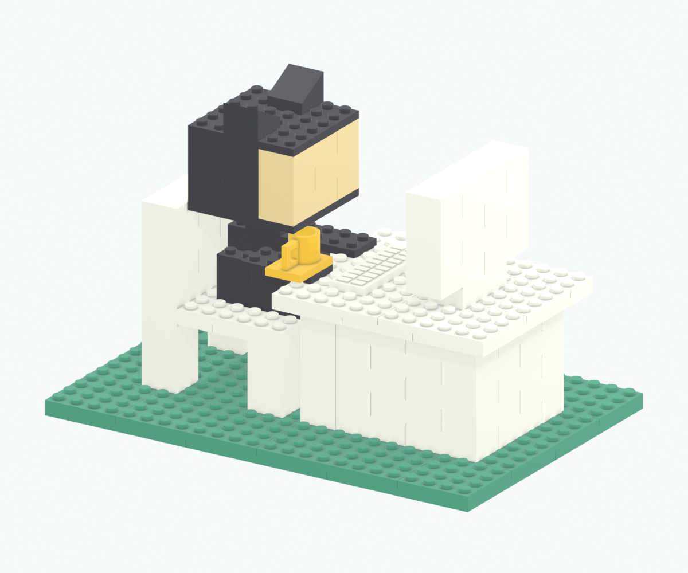
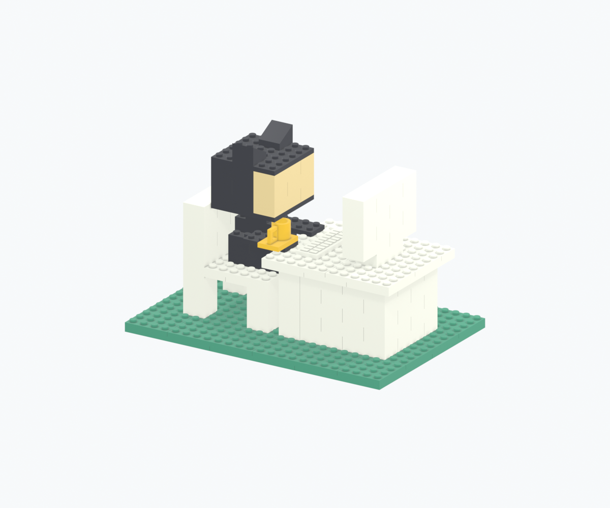

A
印刷プレートから探す
この型・色を使う全候補。押すと工程と位置を表示します。
8 MM PITCH / A LITTLE DESK WORLD
白い机。黄色いマグ。
ひとつずつ積んでつくる、小さな作業部屋。
この画像は配布STLと同じ形状のBlender完成CGです。実物写真ではありません。

01 / ASSEMBLY WORKSPACE
印刷プレートの順番と、組立工程の順番は別です。
同じ型・同じ色は交換可能。番号は案内用で実物には刻印していません。
この型・色を使う全候補。押すと工程と位置を表示します。
分解は工程群を上へ離す説明表示です。一斉に引き抜く実手順ではありません。0%で配布データの位置へ正確に戻ります。取り外しは逆順、マグより先に頭を外します。
02 / PRINT SMALL FIRST
デジタル検査と、実機の嵌合は別の確認です。
工具や強い力が必要なら、その先を印刷しないでください。
FIT-M-D470（オス径4.70 mm）と FIT-F-CP12（メス半径クリアランス+0.12 mm）。1組だけを印刷し、軽い手の力で着座・取り外しできるか確認。
01 / 試験片の3MF ↓本番はオス径4.80 mm / メス半径+0.04 mmの未評価候補です。2×2と2×4を各2個で再確認。ゆるい試験片の合格を本番の合格へ読み替えないでください。
02 / 代表部品の3MF ↓8×8を2枚並べ、4×8を90°回して長辺をXへ向け、下段のX=64 mmの継ぎ目をまたいで載せます。その後に本番台座、机、残りを少量ずつ。
03 / 継ぎ目試験の3MF ↓ZIPは先に展開。3MFを「形状」として読み込み、P1S・0.2 mmノズル・使用するPLA/プレートの実プロファイルを選びます。STLは単位mm・100%。同じ個体をSTLと3MFから二重に読み込まないでください。
下面は開いた壁・筒・リブです。下面をベッドへ向け、受け穴にbrimやサポートを埋めないこと。初層の入口、屋根の最初のブリッジ（設計上6.8 mm以下）、スタッド、マグの取っ手の5.2 mmブリッジ、キーの0.7 mm浮彫をレイヤープレビューで確認します。支持材の要否は実スライスで判断します。
色ごとに単色印刷でき、AMSは必須ではありません。配置は部品間10 mm、ベッド端10 mmの名目余白で、片側4 mmまでのbrim余地を確保しています。実プレートの除外領域や自動配置変更は別途確認が必要です。ノズル・PLA色を変えた時も嵌合を再確認してください。
中止条件：入口の閉塞、着座しない、白化・割れ、保持不足、反り、強い力・工具が必要。負のクリアランス候補は意図的干渉用で初回には使いません。マグは展示部品で、飲食用ではありません。小部品を含むため乳幼児向け玩具ではありません。
03 / THE WHOLE BUILD

同じSTL・個体ID・配置・工程から生成。静止画はBlender EEVEE、動画はBlender Workbenchの実レンダーです。共通動画には元の日本語焼込みが残ります。形状を再レンダーせず、英語字幕と下の同期字幕を追加しています。
共通MP4（H.264） / WebM互換版（VP9） / 日本語字幕（SRT）
H.264非対応のブラウザーはWebMを再生します。字幕はオフラインでも言語切替に連動します。元動画の日本語焼込み自体は翻訳していません。
04 / KEEP THE KIT
2言語版ZIPを展開すれば、ネット接続なしで使えます。
一括ZIPを保存 ↓ / 設計ソースを見る ↗
| 型ID / STL | 色 | 必要数 |
|---|
設計・個体・工程・接続 JSON / 実CADカタログ / 印刷マニフェスト / 検査結果の統合レポート / 別配置の型ライブラリFCStd
正体積・単一ソリッド、native再読込、STEP対応、STL manifold/法線/寸法、意図しない体積干渉、上方の挿入経路、接続グラフ、数量一致、3MF配置、ブラウザーとオフライン動作を対象にしています。デジタル合格は実スライスや保持力・強度・反り・転倒・耐久試験の代用ではありません。
FreeCADネイティブは形状・位置・工程・色名/PartColor属性を保存して再読込済みです。offscreen GUI起動が止まったため、FreeCAD画面上の表示色は未確認です。既定の灰色で表示される場合は、色の確認にこのガイドまたはBlenderを使ってください。ネイティブ内部のラベルは日本語のままですが、IDは2言語ガイドと対応します。